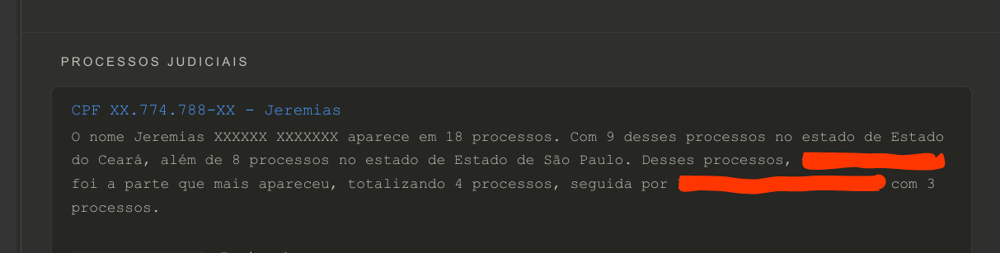
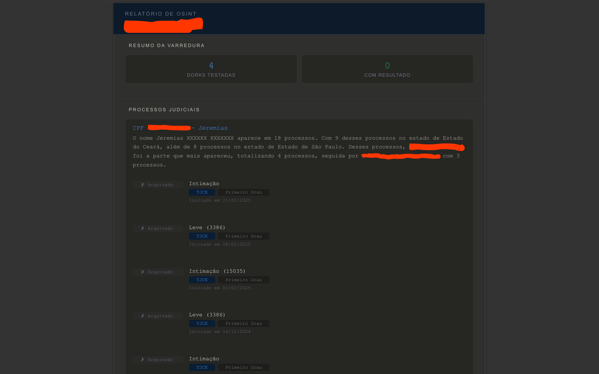

Este projeto nasceu da minha necessidade de automatizar investigações de fontes abertas, transformando um alvo inicial, um nome ou CPF em um dossiê estruturado, sem precisar executar cada etapa manualmente. A estrutura principal é construída sobre LangGraph, biblioteca que me permitiu montar o agente como uma máquina de estados, onde um modelo de linguagem local (rodando via Ollama) atua como o "cérebro" da operação, decidindo a cada passo qual ferramenta usar com base no que já foi coletado.
Digite o nome ou cpf do alvo: CPF ou Nome Completo aqui
Diga o que você deseja buscar: Busque informações com base no dado fornecido, procure informação do email teste@gmail.com e do site www.teste.com.br
Arquitetura: por que uma state machine
Optei por LangGraph em vez de um loop simples porque a investigação precisa ramificar de forma condicional, nem toda investigação precisa passar por todos os nós. O grafo tem roteadores que decidem o caminho com base em flags extraídas pela própria IA:
O flag
has_cpf controla se o nó de processos judiciais é acionado, pesquisar só por nome geraria volume de resultado inviável de filtrar automaticamente, então essa etapa fica condicionada à existência de um identificador mais específico. Depois da verificação de vazamentos, o grafo decide entre seguir para processos (se houver CPF) ou pular direto para a checagem de mandados. Também existe uma trava de segurança: se o nó de raciocínio passar de 6 tentativas sem o modelo decidir finalizar sozinho, o grafo força o encerramento da fase de busca e empurra a execução adiante, evita que o agente entre em loop gerando dorks indefinidamente.
Também implementei persistência via
SqliteSaver, usando o nome do alvo como thread_id. Isso significa que a investigação tem memória entre execuções: se eu rodar o mesmo alvo de novo, o LangGraph recupera o estado salvo em vez de começar do zero, útil tanto para retomar uma investigação interrompida quanto para não gastar chamadas repetindo buscas já feitas.
O nó de raciocínio: como o agente decide a próxima dork
Essa foi a parte que mais refinei. Na primeira versão, o modelo combinava várias entidades numa dork só, nome, CPF e cidade na mesma busca, por exemplo, e isso praticamente garantia zero resultado, porque cada operador adicional restringe ainda mais um universo de busca que já é pequeno. Reescrevi o prompt do agente com um princípio central: testar entidades isoladas antes de combiná-las, seguindo uma lógica de especificidade.
Algumas regras que ficaram no prompt final: identificadores exatos (CPF, e-mail, telefone, nome completo) sempre entre aspas, com operadores como
site:, filetype:, OR fora das aspas. Quando existe mais de uma variação do mesmo dado, o agente combina as variações numa única dork via OR, em vez de gastar uma tentativa em cada formato separadamente. Uma entidade só pode ser combinada com operador de fonte depois que a busca isolada dela já retornou pelo menos um resultado com conteúdo real. Se uma dork não retorna nada, o agente é instruído a não insistir em variações do mesmo termo, e sim mudar de entidade ou de estratégia.
O modelo roda com temperature=0, porque previsibilidade de formato importa mais do que criatividade aqui, preciso que ele siga a estrutura JSON esperada sem alucinar campos, já que o parsing da resposta alimenta diretamente o roteamento do grafo.
Consulta WHOIS
Sempre que uma dork retorna uma URL nova, ou o usuário menciona um domínio no prompt, o agente prioriza consultar o WHOIS antes de continuar buscando, a lógica é enriquecer qualquer domínio relevante assim que ele aparece, em vez de deixar para o final.
Um cuidado que precisei adicionar na análise final: nem todo dado que aparece no WHOIS de um domínio pertence de fato ao alvo pesquisado. Tive um caso real onde o CPF do registrante do domínio era diferente do CPF pesquisado, nesse cenário, o resumo final não pode tratar e-mails e nomes desse WHOIS como se fossem do alvo. Isso virou uma regra explícita no prompt de geração de resumo: tratar cada artefato de forma isolada e só declarar vínculo com o alvo principal quando o conteúdo do resultado comprovar isso de forma explícita.
Verificação de vazamentos
Uso a API do HackMyIP para checar se os e-mails extraídos do prompt do usuário aparecem em vazamentos conhecidos. Não é tão atualizada quanto serviços como o HaveIBeenPwned, mas cumpre bem o papel de triagem inicial dentro do fluxo e por ser gratuita/simples de integrar, encaixou melhor no escopo do projeto.
Resolução automatizada de CAPTCHA
Para garantir que o agente opere de forma totalmente autônoma, sem que a necessidade de uma intervenção humana interrompa ou congele o fluxo da investigação, foi necessário desenvolver uma função específica para lidar com as barreiras de reCAPTCHA nos portais de consulta. A técnica utilizada para executar o bypass muda completamente a abordagem lógica tradicional: em vez de tentar decifrar os desafios visuais de imagens, o script aciona a opção de acessibilidade da plataforma. O bot interage com a página, realiza o download do desafio em formato de áudio, trata o arquivo e utiliza uma biblioteca local de reconhecimento de voz (SpeechRecognition) para transcrever o áudio em texto puro. Esse resultado é injetado diretamente no campo do formulário, resolvendo a validação de forma automatizada e liberando o acesso às informações de mandados de prisão ou internação, dados que são fundamentais em qualquer análise de risco em OSINT.
Por interagir diretamente e transpor os mecanismos de segurança e proteção anti-automação do serviço, essa etapa exige cuidados rigorosos. Todo o desenvolvimento e os testes dessa função de bypass foram conduzidos de maneira estritamente controlada dentro do meu posto de trabalho, contando com a autorização formal do responsável pelos sistemas afetados. Reforço que essa permissão é restrita, pontual e totalmente vinculada ao contexto de homologação desse projeto específico. Por questões de prudência e em respeito aos termos de uso das fontes consultadas, os detalhes técnicos e a implementação exata do código não serão expostos publicamente, e essa solução não deve ser interpretada como um aval genérico para automatizar acessos ou burlar proteções fora do escopo desse acordo.
Processos judiciais e mandados
O agente consulta fontes públicas/oficiais para processos judiciais e mandados de prisão em aberto, mas essa etapa só é ativada quando existe CPF ou nome identificado no prompt, isso evita gerar ruído (e requisições desnecessárias) quando não há identificador suficiente para uma busca precisa. Essa parte do pipeline lida com proteções anti-automação nas fontes consultadas; não vou detalhar publicamente a técnica usada para isso, por prudência em relação aos termos de uso dessas fontes.
Essa etapa específica foi desenvolvida e testada no contexto do meu posto de trabalho, com autorização formal do responsável pelos sistemas envolvidos. Reforço que essa autorização é pontual e vinculada a esse contexto, não é uma permissão genérica, e não deve ser interpretada como validação para automatizar acesso a essas mesmas fontes fora desse acordo.
Fonte privada (removida da versão pública)
Cheguei a implementar, como prova de conceito local, uma integração com uma base de dados privada que cruzava CPF com nome, telefone, endereço e filiação. Optei por não distribuir nem manter essa integração ativa na versão pública do projeto por talvez ser incompatível com a LGPD e o escopo que quero manter aqui é o de fontes abertas. Para ilustrar como ficava a saída, deixo abaixo um print com todos os dados pessoais que seria integrado junto ao relatorio final em PDF:

Geração do relatório final
Quando a fase de coleta termina, o agente compila todos os resultados de dorks, WHOIS, vazamentos, processos, mandados, e usa o LLM para redigir um resumo analítico em texto corrido, sem markdown ou listas, seguindo diretrizes específicas de formatação e de isolamento entre artefatos (para não inventar vínculo entre dado e alvo sem evidência). O relatório final é montado com Jinja2 e renderizado em PDF via WeasyPrint, entregando um documento estruturado e pronto pra leitura, sem eu precisar formatar nada manualmente.




Toda a lógica de como esses agentes conversam entre si, as decisões de roteamento e a integração com as ferramentas de inteligência estão devidamente documentadas no código. Quem quiser dar uma olhada e entender como montei essa arquitetura, o repositório completo está disponível no meu GitHub: https://github.com/Guilherme30110/osint-ai